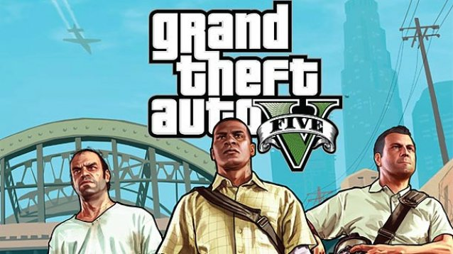

Grand Theft Auto V voor PC maakt volledig gebruik van de kracht van de PC door verbeteringen te leveren zoals verhoogde resolutie en grafische details, hogere verkeersdichtheid, weidsere uitzichten, verbeterde AI, de toevoeging van nieuwe wilde dieren en geavanceerde weer- en schade-effecten voor een ultieme open wereld-ervaring.
Los Santos: een uitgestrekte, zonovergoten metropool vol zelfhulpgoeroes, sterretjes en vergane beroemdheden. Ooit wekte deze plek de jaloezie op van de gehele westerse wereld, maar nu worstelt de stad om het hoofd boven water te houden in een tijdperk van economische onzekerheid en goedkope reality-tv. Te midden van deze onrust riskeren drie zeer verschillende criminelen alles in een reeks van gedurfde en gevaarlijke heists, die hen een leven zonder geldzorgen moeten bezorgen.
In de grootste, meest dynamische en meest diverse open wereld ooit gemaakt - en nu nog gedetailleerder - combineert Grand Theft Auto V verhalen en gameplay op een nieuwe manier doordat spelers continu in en uit de levens van de drie hoofdpersonages stappen en zo alle kanten van het verhaal in de game spelen.
Grand Theft Auto V voor PC bevat ook Grand Theft Auto Online, het alsmaar veranderende Grand Theft Auto universum. Ontdek deze grote wereld of klim op binnen de criminele gelederen door missies (Jobs) voor contant geld te voltooien, onroerend goed te kopen, voertuigen en personages te upgraden, te concurreren in de traditionele competitieve modi of nieuwe content te spelen en te delen met de Grand Theft Auto community.
Alle nieuwe content en gameplay gemaakt en vrijgegeven sinds de lancering van Grand Theft Auto Online – inclusief nieuwe missies, een arsenaal aan nieuwe wapens, nieuwe voertuigen, nieuw onroerend goed en speler customizations – zijn ook beschikbaar in Grand Theft Auto Online voor PC. Daarnaast heeft de huidige community van spelers de mogelijkheid om hun Grand Theft Auto Online personages en progressie over te zetten naar PlayStation® 4, Xbox One of PC.
Grand Theft Auto V voor PC bevat ook een video-editor waarmee professionele films gemaakt kunnen worden.